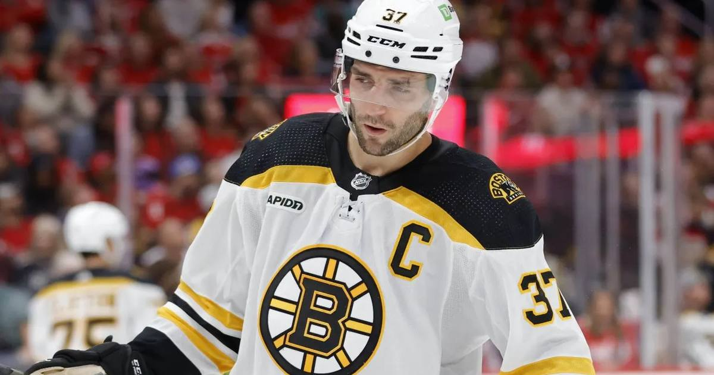

Patrice Bergeron is officially a Hall of Famer
Patrice Bergeron was inducted into the Hockey Hall of Fame on Monday night in Toronto, first ballot, as part of the Class of 2026 — the final honor for a 19-year career spent entirely in Boston, built on a record six Selke Trophies and a Stanley Cup.

Disclosure: this post contains affiliate links. I earn a commission on qualifying purchases.
Patrice Bergeron is a Hall of Famer. Officially, finally, and on the first ballot.
The former Boston Bruins captain was inducted into the Hockey Hall of Fame on Monday night, November 9, in Toronto, as part of the Class of 2026 — joining Carey Price, Pekka Rinne, Keith Tkachuk and Cindy Curley in the player category, with Brian Burke going in as a builder. The ceremony aired at 8 p.m. ET on NHL Network. Bergeron was the only inductee in the class in his first year of eligibility, and honestly, it was never in doubt.
He is the 54th player and 62nd individual affiliated with the Bruins to be elected to the Hall, and the 16th first-ballot Hall of Famer to play for Boston.
The night in Toronto
The induction was the capstone of a full weekend. On Saturday, Bergeron received his Honored Member ring and plaque at the Hall. On Sunday, he got his Hall of Fame blazer from fellow Bruins legend Ray Bourque before the Maple Leafs hosted the Devils, then joined his fellow inductees for a ceremonial pregame puck drop with Auston Matthews and Nico Hischier.
Monday night, he took his place among the sport's legends for good.
The career, in numbers
Bergeron spent all 19 of his NHL seasons in Boston after the Bruins took him in the second round — 45th overall — in the 2003 NHL Draft. He retired on July 25, 2023, and the numbers he left behind read like a franchise monument:
Regular season: 1,294; 427; 613; 1,040; +289
Playoffs: 170; 50; 78; 128; +42
He ranks third in Bruins history in games played (1,294), behind only Ray Bourque (1,518) and Johnny Bucyk (1,436) — and third in goals and points, fourth in assists. He is also third in points from the entire 2003 draft class, behind only Joe Pavelski (1,068) and Eric Staal (1,063), despite being picked 43 spots after Staal.
His career-high was 79 points (32 goals, 47 assists) in just 65 games in 2018-19. In 2011-12, he led the entire NHL in plus-minus (+36) and finished second in faceoff win percentage (59.3%). For his career, he won 57.9 percent of his faceoffs — 15,182 draws, the kind of number that doesn't show up on a highlight reel but wins hockey games.
The Selke King
Bergeron's signature achievement is simple to state and almost impossible to grasp: he won the Frank J. Selke Trophy — awarded to the NHL's best defensive forward — a record six times: 2012, 2014, 2015, 2017, 2022 and 2023.
Nobody else has more than four. He broke Bob Gainey's record with his fifth Selke in 2022, then added a sixth in his final season, at age 37. He was a finalist for the award a record 11 consecutive seasons.
He turned defense into a star trait. For most of his career, Bergeron was the answer to the same question every contending team asked: who shuts down the other team's best line, wins the defensive-zone draw, kills the penalty, and then scores the goal that wins the game anyway?
2011: the Cup
Bergeron helped the Bruins reach the Stanley Cup Final three times — 2011, 2013 and 2019 — and lifted the trophy once, in 2011. His defining night came in Game 7 against the Vancouver Canucks: two goals, one of them shorthanded, in a 4-0 win that ended Boston's 39-year championship drought. He opened the scoring 14:37 into the first period, then buried the shorthanded dagger late in the second.
It was the first Cup for the Bruins since 1972, and Bergeron was at the center of it — literally and figuratively.
The Triple Gold Club
Bergeron is one of only 30 players in hockey history in the Triple Gold Club: a Stanley Cup (2011), an IIHF World Championship (2004), and Olympic gold medals — two of them, with Canada in 2010 and 2014. He also won the King Clancy Memorial Trophy in 2013 and the Mark Messier Leadership Award in 2021, and was a three-time All-Star.
The leader
The trophies tell you what Bergeron did. The stories from his teammates tell you who he was.
There were late nights, his kids asleep, when Bergeron would sit with the notes app open on his phone, thinking about his Bruins teammates. He would make a list — players to check in with, mini-speeches to give, ideas for team meetings — and text Brad Marchand, his longtime linemate, saying he couldn't stop thinking about how the group could become closer. Then he'd strategize with Zdeno Chara, or check in on a teammate who was struggling, on a human level, not just a hockey one.
That is why, when the Bruins named him the 20th captain in franchise history in January 2021, nobody in the room was surprised. He had been leading the team for years before the letter went on his jersey.
What's next: No. 37 goes to the rafters
The Bruins have already announced they will retire Bergeron's No. 37 on December 1 — the 14th number retired by the franchise, and the highest honor a team can give one of its own. For a player who spent 19 seasons in one uniform, it is the fitting final piece: the Hall of Fame plaque in Toronto, and his number hanging in Boston forever.
Watch
Source: Bruins vs. Canucks, 2011 Stanley Cup Final Game 7 highlights — embedded by NBC Sports Boston in its Bergeron career retrospective. The video shows Bergeron's two goals in the Cup-clinching 4-0 win over Vancouver, including the shorthanded dagger in the second period.
Gear up: Fanatics